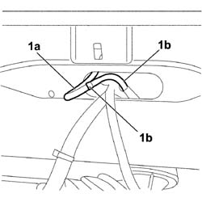
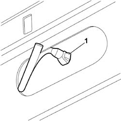

5050C10 REAR WINDOW WASHER JET - R+R CLEAN AND/OR POSITION
- Path
- Procedures > 50 AUXILIARY UNITS > 5050 SCREEN WASHERS AND HEADLAMP WASH/WIPE > 5050C REARSCREEN WASH/WIPE > 5050C10 REAR WINDOW WASHER JET - R+R CLEAN AND/OR POSITION
- Kind
- repair procedure (removal / refitting; the operation number is the code)
- Applies to
- all engines; all production periods
- Interactive page
- https://sloeber94.github.io/elrnDB-fCrm/en/#/194000655
Applies to: all engines; all production periods
 Removing
Removing
 Refitting
Refitting- Open the tailgate.
Op. 7015A58 INTERNAL TAILGATE MOULDING (ONE) - R+R
1. Working from inside the tailgate, extract the fluid supply pipe (1a) to the rearscreen washer jet through the slit shown in the diagram and disconnect it from the connector (1b).

Applies to: all engines; all production periods
1. Press on the retaining clip and, pushing towards the outside of the vehicle, release and extract the rearscreen washer jet, complete with pipe, from its housing.

Applies to: all engines; all production periods
Refitting
Removing- Check that the screen washer jet is not damaged.
- Working from the outside of the vehicle, press the retaining clip and attach the rearscreen washer jet, complete with pipe, in its housing.
- Working from the inside of the tailgate, connect the fluid supply pipe for the rearscreen washer jet to the connector.
- Insert the pipe in the slot.
Op. 7015A58 INTERNAL TAILGATE MOULDING (ONE) - R+R
- Check that the jet is working.